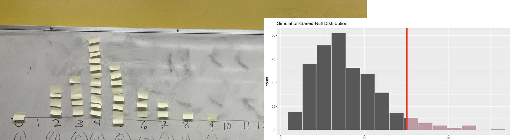

00:30
Inference Review
STAT 20 UC Berkeley
Announcements
- OH 3 - 4 pm today and tomorrow
- PS 8/9 posted for practice (not turned in)
- Room assignments will appear this afternoon on Ed post.
Agenda
- Classical Tools of Inference
- Confidence Intervals
- Hypothesis Tests
- Inference on a small sample
Classical Tools of Inference
Classical Tools of Inference
Confidence Intervals
Establishes an interval (LB, UB) that conveys the uncertainty in a point estimate of a parameter.
Hypothesis Test
Asserts properties of the population and its parameters. Evaluates if the observed data is consistent with that assertion.
Confidence Intervals
Get ready for a poll…
Based on their survey of ~1600 students, the Chancellor’s Office estimates that 68% of all Berkeley students support the People’s Park Project. With a confidence level of 99%, they have a margin of error of 3%. Which of the following, if any, are correct statements regarding the corresponding confidence interval?
A. There is a 99% probability that the true proportion of all Berkeley students who support the project is between 65% and 71%.
B. If we were to collect many other samples of size ~1600 and construct many such intervals, we’d expect 95% of them to contain the population parameter.
C. If the sample size had been ~3200, the 99% confidence interval would be narrower than 65% to 71%.
Discuss: Based on their survey of ~1600 students, the Chancellor’s Office estimates that 68% of all Berkeley students support the People’s Park Project. With a confidence level of 99%, they have a margin of error of 3%. Which of the following, if any, are correct statements regarding the corresponding confidence interval?
A. There is a 99% probability that the true proportion of all Berkeley students who support the project is between 65% and 71%.
B. If we were to collect many other samples of size ~1600 and construct many such intervals, we’d expect 95% of them to contain the population parameter.
C. If the sample size had been ~3200, the 99% confidence interval would be narrower than 65% to 71%.
02:00
CI: What is it?
An expression of the variability in the statistic upon hypothetical resampling: “What if we had drawn a different sample? How different would our statistic be?”
- Can study any statistic: \(\hat{p}, \bar{x}, \hat{p}_1 - \hat{p}_2, \bar{x}_1 - \bar{x}_2, median, median_1 - median_2\), etc)
- Can express the variability either with the standard error or a confidence interval.
- Both rooted in the notion of a sampling distribution.
How do we approximate the sampling distribution?
The Bootstrap
- Works for any statistic
- Works well most most statistics (not min, max)
- Should not be used when \(n\) is small
Probability Theory
- Each statistic requires a tailored approach
- Approximate distributions when \(n\) is large
- Exact distribution in very specific scenarios
- Binomial
- \(t\)-distribution
Approximating with the Normal Curve
CLT: Sums of independent random variables become normally distributed as n gets very large.
- Works for a large number of statistics
- Center your interval at the point estimate, extend out 2 SE (for 95% confidence)
\[ \textrm{point estimate} \pm 2 SE \]
How do we interpret the result?
“We are 95% confident that the true parameter lies between LB and UB.”
What does this mean?
Which of the following statements, if any, about the sampling distribution is/are true? If false, think through what would need to change for it to be true.
A. The sampling distribution represents the distribution of the data upon hypothetical resampling.
B. Our best guess at the sampling distribution (via bootstrapping or probability theory) is generally centered at the point estimate.
C. The standard error represents the standard deviation of the population distribution.
D. The spread of the sampling distribution will decrease as the sample size increases.
02:00
Discuss: Based on their survey of ~1600 students, the Chancellor’s Office estimates that 68% of all Berkeley students support the People’s Park Project. With a confidence level of 99%, they have a margin of error of 3%. Which of the following, if any, are correct statements regarding the corresponding confidence interval?
A. There is a 99% probability that the true proportion of all Berkeley students who support the project is between 65% and 71%.
B. If we were to collect many other samples of size ~1600 and construct many such intervals, we’d expect 95% of them to contain the population parameter.
C. If the sample size had been ~3200, the 99% confidence interval would be narrower than 65% to 71%.
Sources of Error in Generalization
Prediction: 43% for FDR, Result: 62% for FDR

Literary Digest surveyed
- magazine subscribers
- registered car owners
- registered telephone owners
Their sampling method was biased (not representative).
Hypothesis Testing
Classical Tools of Inference
Confidence Intervals
Establishes an interval (LB, UB) that conveys the uncertainty in a point estimate of a parameter.
Hypothesis Test
Asserts properties of the population and its parameters. Evaluates if the observed data is consistent with that assertion.
Structure of a Hypothesis Test
Start with a null hypothesis ( \(H_0\) ) that represents the status quo and an alternative hypothesis ( \(H_A\) ) that represents our research question, i.e. what we’re testing for.
Calculate the observed test statistic: an encapsulation of the evidence.
Find the null distribution of the test statistic under the assumption that \(H_0\) is true, either via simulation (our focus) or mathematical methods.
If the test results suggest that the data is consistent with \(H_0\), we stick with the \(H_0\). If they are inconsistent, then we reject the \(H_0\) in favor of \(H_A\).
Pew revisited as an H-test

Let \(p\) be the proportion of all registered Republicans that view Democrats as close-minded in 2016.
\(H_0\) \(p = .5 \quad \quad\)\(H_A\) \(p \ne .5\)
How do we approximate the null distribution?
It depends on the type of null hypothesis.
Permutation
- Null: two variables are independent of one another
- Corresponds to test statistics with differences: \(\hat{p}_1 - \hat{p}_2\), \(\bar{x}_1 - \bar{x}_2\)
Taking Draws
- Null: setting particular values of the parameters for a single variable
- \(H_0\): \(p = p_0\)
- \(H_0\): \(p_1 = p_{0,1}\), \(p_2 = p_{0,2}\), etc.
There are methods based upon probability theory as well.
How do we interpret the result?
You can measure the consistency between the null hypothesis and your data with a p-value.
Which of the following is/are appropriate statements about the p-value of .06 that we observed in our Goodness of Fit test of Iran voting data to Benford’s Law?
A. The probability that the null hypothesis is true, based on this data or more extreme, is .06.
B. If the first digit vote counts were sampled according to Benford’s Law the probability of observing our data or more extreme would be .06.
C. In this setting, like most others, it’s important to report a two-sided p-value.
D. At an alpha level of .1, we could decide to fail to reject the null hypothesis, which opens us up to the change of committing a type II error.
02:00